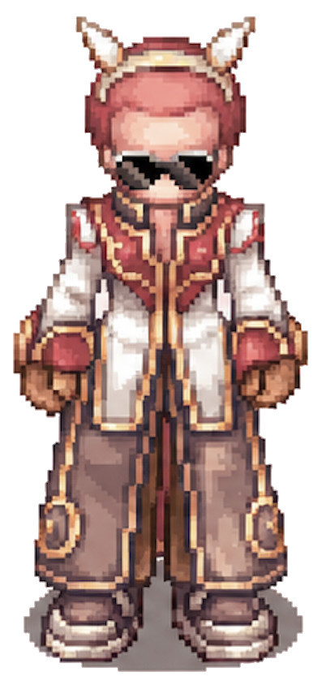

CSS-only idle motion prototype built from the existing static sprite. The motion stays quieter and more protective than an action pose, with a slow breathing rhythm that fits the Product Bible Guardian role.
